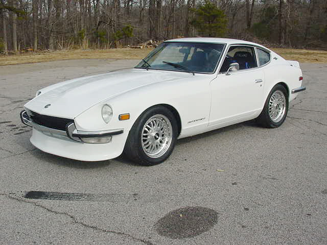
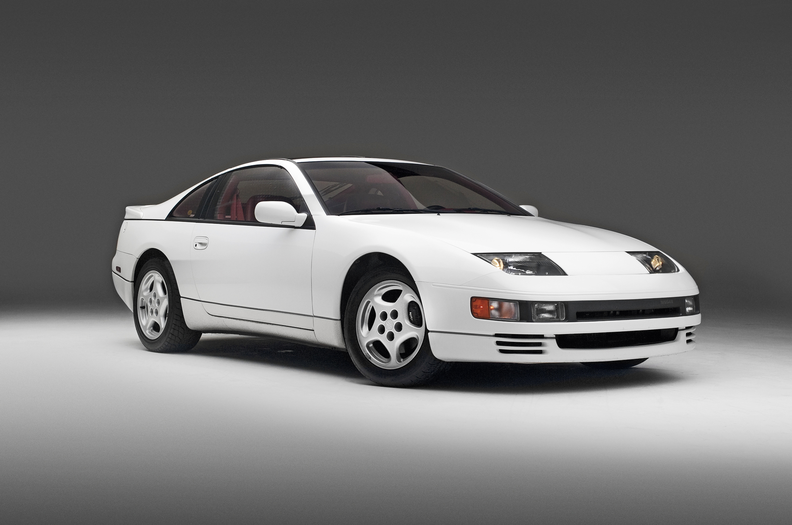

Datsun 240z
Image Source
The 240z was a classic and a start to the Z generation. This was back when nissan was first classified as "Datsun".
Click here for more information about the 240zNissan 300zx
Image Source
The 300zx itself had many changes and generations
Click here for more information about the 300zxNissan 350z

Image source
The 350z was another generation of the Z's produced from 2003-2008 it was the start of the VQ motor series.
Click here for more information about the 350zNissan 370z

Image source
The 370z is the latest generation of the Z's produced from 2009 to today, with a slightly upgraded moter.
Click here for more information about the 370z